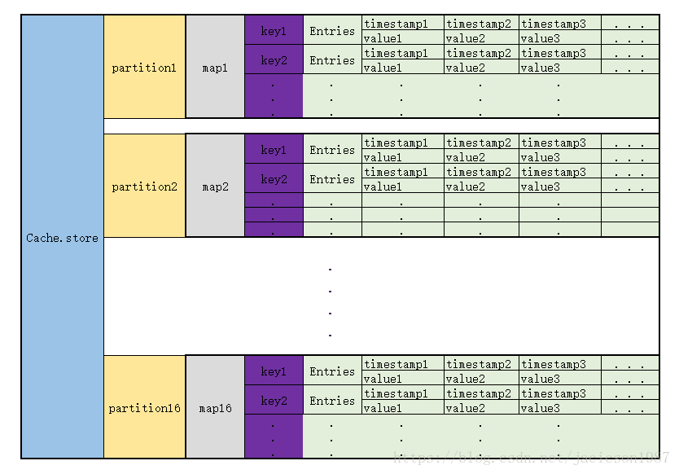

本文主要讲解influxdb数据的组织形式，分为内存中的形式和磁盘中的形式。
代码路径influxdb/tsdb/engine/，内存Cache结构在influxdb/tsdb/engine/tsm1/cache下面，
内存中组织形式
结构说明
1 | type Cache struct { |
Cache里面有一个store，数据就是存在这个store里面。Cache里面还有一个snapshot， 定时把store里的数据复制到snapshot.store里，然后store清空。然后再把snapshot.store里的内容写入文件。
那这个store里到底是什么结构呢？store被初始化成一个含有16个partitions(节点)的ring。这个ring我称之为伪一致性哈希，因为它并没有成环。
1 | func (c *Cache) init() { |
每一个partition都初始化成一个map，key是string, value是一个数组1
2
3
4
5
6
7
8
9
10
11
12
13
14
15
16
17
18
19func newring(n int) (*ring, error) {
if n <= 0 || n > partitions {
return nil, fmt.Errorf("invalid number of paritions: %d", n)
}
r := ring{
partitions: make([]*partition, n), // maximum number of partitions.
}
// The trick here is to map N partitions to all points on the continuum,
// such that the first eight bits of a given hash will map directly to one
// of the N partitions.
for i := 0; i < len(r.partitions); i++ {
r.partitions[i] = &partition{
store: make(map[string]*entry),
}
}
return &r, nil
}
通过跟踪发现，这个map的key就是和TSM文件结构里面的key一致(代码路径在influxdb/tsdb/engine/tsm1/engine下面)： measurement,tags#!~#field ；而这个entry呢，是一组data，每个data由timestamp和value 两个部分构成 。
那key是怎么映射到具体某个partition的呢?1
2
3
4
5// getPartition retrieves the hash ring partition associated with the provided
// key.
func (r *ring) getPartition(key []byte) *partition {
return r.partitions[int(xxhash.Sum64(key)%partitions)]
}
xxhash.sum64，再与partition的数量（16）求余，得到下标，找到partition. 具体xxhash.sum64这个哈希值怎么计算的呢，以后在研究。
结构图
现在已经知道了Cache中数据的存储方式了，来张表更清楚一点

每次写入同一个key的数据，那就找到其Entries, 把新的数据直接append到后面。
排序与去重
这样就又有问题了，如果 timestamp旧的数据后来，那这一组数据的就不是按照timestamp的大小顺序了。这里怎么解决的呢，这里并没有解决，不管是来的更旧的timestamp的数据 还是duplicated数据，统统加后面。
去重和排序在两个地方做：
- select xx from xx的时候
- snapshot写入TSM文件的时候
这个去重和排序代码如下， 先检查顺序，需要的话就sort.最后检查去重。这个sort算法有时间可以看看，应该是针对大部分都是按顺序的情况下效率可以的排序。1
2
3
4
5
6
7
8
9
10
11
12
13
14
15
16
17
18
19
20
21
22
23
24
25
26
27
28
29
30
31
32
33
34
35// Deduplicate returns a new slice with any values that have the same timestamp removed.
// The Value that appears last in the slice is the one that is kept. The returned
// Values are sorted if necessary.
func (a Values) Deduplicate() Values {
if len(a) <= 1 {
return a
}
// See if we're already sorted and deduped
var needSort bool
for i := 1; i < len(a); i++ {
if a[i-1].UnixNano() >= a[i].UnixNano() {
needSort = true
break
}
}
if !needSort {
return a
}
// 先排序
sort.Stable(a)
// 下面这段代码实际上就是去重，如果i和j指向的数据一样，则i不移动，让i指向的数据变成j指向的数据(本来就一样)，然后j++；如果i和j指向的数据不一样，则都进行++，然后i指向j的数据。
var i int
for j := 1; j < len(a); j++ {
v := a[j]
if v.UnixNano() != a[i].UnixNano() {
i++
}
a[i] = v
}
return a[:i+1]
}
内存数据分布的简单版本如下：即seriesKey+field到timeValues的映射：
TSMFile 结构
TSM file的结构如下:
从TSM file读取数据的流程如下：
- 首先读取footer，获取SeriesIndexSection的offset，可以只加载seriesIndexBlock。
- 根据Key（即SeriesKey+field）二分查找匹配的SeriesIndexBlock。
- 根据时间二分查找在SeriesIndexBlock中找到对应的IndexEntry。
- 根据IndexEntry加载并解压SeriesDataBlock。

参考文献
In-memory indexing and the Time-Structured Merge Tree (TSM)
Influxdb中TSM文件结构解析之读写TSM
时序数据库技术体系 – InfluxDB TSM存储引擎之TSMFile
influxdb内存中Cache数据结构详解